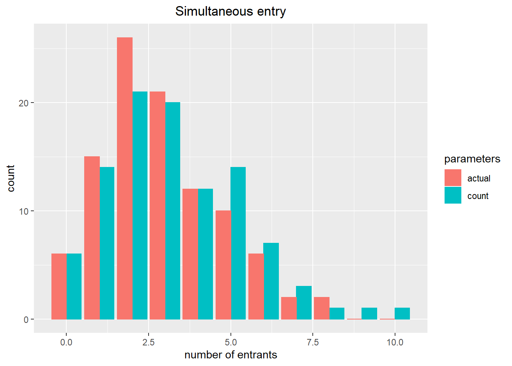

Chapter 16 Assignment 6: Entry and Exit Analysis
The deadline is April 22 1:30pm.
16.1 Simulate data
In this assignment, we consider a Berry-type entry model. Suppose that there are \(M\) markets indexed by \(m = 1, \cdots, M\). In each market, there are \(N_m\) potential entrants such that \(N_m \le \overline{N}\). Let \(x_m\) be the \(K\) dimensional market attributes and \(z_{im}\) be the \(L\) dimensional potential entrant attributes. The size of Monte Carlo simulations in the estimation is \(R\).
- Set the constants as follows:
# set the seed
set.seed(1)
# number of markets
M <- 100
# the upper bound of the number of potential entrants
N <- 10
# the dimension of market attributes
K <- 2
# the dimension of potential entrant attributes
L <- 2
# the number of Monte Carlo simulations
R <- 100The payoff of entrant \(i\) in market \(m\) is: \[ \pi_{im}(y_m) = x_m'\beta - \delta \ln \left(\sum_{i = 1}^{N_m} y_{im}\right) + z_{im}'\alpha + \sqrt{1 - \rho^2} \nu_{im} + \rho \epsilon_{m}, \] where \(y_{im} \in \{0, 1\}\) is the indicator for entrant \(i\) in market \(m\) to enter the market, and \(\nu_{im}\) and \(\epsilon_m\) are entrant- and market-specific idiosyncratic shocks that are drawn from an i.i.d. standard normal distribution. In each market, all the attributes and idiosyncratic shocks are observed by the potential entrants. \(N_m\), \(x_m\), \(z_{im}\), and \(y_m\) are observed to econometrician but \(\nu_{im}\) and \(\epsilon_m\) are not.
- Set the parameters as follows:
# parameters of interest
beta <- abs(rnorm(K)); beta## [1] 0.6264538 0.1836433alpha <- abs(rnorm(L)); alpha## [1] 0.8356286 1.5952808delta <- 1; delta## [1] 1rho <- abs(rnorm(1)); rho## [1] 0.3295078# auxiliary parameters
x_mu <- 1
x_sd <- 3
z_mu <- 0
z_sd <- 4- Draw exogenous variables as follows:
# number of potential entrants
E <- purrr::rdunif(M, 1, N); E## [1] 3 1 5 5 10 6 10 7 9 5 5 9 9 5 5 2 10 9 1 4 3 6 10 10 6 4
## [27] 4 10 9 7 6 9 8 9 7 8 6 10 7 3 10 6 8 2 2 6 6 1 3 3 8 6
## [53] 7 6 8 7 1 4 8 9 9 7 4 7 6 1 5 6 1 9 7 7 3 6 2 10 10 7
## [79] 3 2 10 1 10 10 8 10 5 7 8 5 6 8 1 3 10 3 1 6 6 4# market attributes
X <- matrix(
rnorm(M * K, x_mu, x_sd),
nrow = M
)
colnames(X) <- paste("x", 1:K, sep = "_")
X## x_1 x_2
## [1,] -0.706006198 -2.693970265
## [2,] 0.594464155 3.951686710
## [3,] 4.534260990 1.659774411
## [4,] -3.570700401 -3.401750087
## [5,] 2.781838563 2.563068228
## [6,] 1.998851114 0.523736186
## [7,] 4.189299512 5.393761936
## [8,] 0.087448229 -1.298245999
## [9,] 2.110056430 -0.290635262
## [10,] 1.801296372 -1.778328492
## [11,] -0.627560093 0.468688116
## [12,] 4.623603418 2.206035338
## [13,] 4.481207847 -1.195244519
## [14,] 3.100640949 3.491119504
## [15,] 5.760500364 -2.624248359
## [16,] 2.675459277 -2.143953238
## [17,] -2.829776625 5.323473121
## [18,] -0.719796243 -2.047542396
## [19,] -2.673837845 2.235924137
## [20,] -0.420201909 -0.143228153
## [21,] -0.861100032 2.228205519
## [22,] 1.126347619 6.066619859
## [23,] -1.732764946 5.759765300
## [24,] 1.474086317 0.007276598
## [25,] -0.963753932 -5.855706606
## [26,] 6.301861808 8.492984770
## [27,] 3.150122428 3.001198500
## [28,] 3.730522688 2.623982008
## [29,] 2.152556073 0.959801431
## [30,] 6.046528242 2.530325269
## [31,] -0.907209362 0.506872505
## [32,] -0.384934191 2.262083930
## [33,] 5.296846716 -0.200740232
## [34,] -0.952089060 -3.110623633
## [35,] 0.377857769 3.963514802
## [36,] -0.178423788 5.559235076
## [37,] 0.040021394 0.073778292
## [38,] 0.162660091 -2.759869267
## [39,] 2.482564994 2.926723917
## [40,] 0.468008553 0.865872589
## [41,] -0.517872386 -4.199655220
## [42,] 5.029116476 1.006395579
## [43,] 0.356261774 -0.890901002
## [44,] 0.461330410 -0.022905740
## [45,] 0.699427776 -2.469717088
## [46,] 3.137998921 6.409425724
## [47,] 0.779306788 0.006603891
## [48,] 0.887097486 -3.816540237
## [49,] -1.044981436 1.591580316
## [50,] 0.027189183 1.789526939
## [51,] 1.180481321 -1.957480101
## [52,] -0.766683459 -7.666762015
## [53,] 2.594488578 -0.921445108
## [54,] -3.555182245 2.711522908
## [55,] 1.919673582 0.820830172
## [56,] -3.609349471 0.705463768
## [57,] 0.097071619 2.682462186
## [58,] -0.584839713 -2.559375916
## [59,] -0.956284342 4.290331133
## [60,] 0.829309666 0.983967915
## [61,] -4.743078277 3.121932002
## [62,] 4.529749936 4.102323204
## [63,] -3.994917309 1.670441245
## [64,] -0.390591204 -1.636122839
## [65,] -2.347760315 4.488893668
## [66,] -1.252457004 -5.000494834
## [67,] 7.261499637 -0.634372220
## [68,] 1.052186859 0.232987873
## [69,] -2.858901591 0.501636890
## [70,] -3.921816603 4.061391726
## [71,] 2.350561304 1.408665679
## [72,] 0.944320502 2.221502810
## [73,] 0.045794876 0.791035561
## [74,] -1.788086442 0.257006975
## [75,] -3.462380930 3.086652420
## [76,] -2.225576890 4.438685072
## [77,] 4.000086411 -6.209288645
## [78,] -0.863800084 2.718218666
## [79,] -3.153280542 2.124173220
## [80,] 6.607871867 -0.275803165
## [81,] 2.275301132 3.853038423
## [82,] 0.284058697 -0.167711545
## [83,] 4.175449146 0.147008015
## [84,] 3.659267954 3.572229334
## [85,] -0.857729145 6.158881897
## [86,] 7.618307394 1.810164703
## [87,] 0.234918910 -0.266552029
## [88,] -3.273483951 -2.567339885
## [89,] 0.566801194 0.006901063
## [90,] 1.622615018 -1.819487980
## [91,] 7.923935197 0.223202251
## [92,] 1.317407104 2.183137505
## [93,] 2.370996416 -1.555571276
## [94,] 0.768541194 8.947500643
## [95,] -0.002002527 1.468035027
## [96,] 0.895821915 4.390621802
## [97,] 3.362918817 -5.867371940
## [98,] 7.225735026 3.223003472
## [99,] 4.082177316 -2.948735481
## [100,] 4.623725195 3.759411033# entrant attributes
Z <-
foreach (m = 1:M) %dopar% {
Z_m <- matrix(
rnorm(E[m] * L, z_mu, z_sd),
nrow = E[m]
)
colnames(Z_m) <- paste("z", 1:L, sep = "_")
return(Z_m)
}
Z[[1]]## z_1 z_2
## [1,] 2.68149640 3.153150
## [2,] 6.28259569 -4.796526
## [3,] 0.01900497 -2.271157# unobserved market attributes
EP <- matrix(
rnorm(M),
nrow = M
)
EP## [,1]
## [1,] 0.398130155
## [2,] -0.407528579
## [3,] 1.324258630
## [4,] -0.701231669
## [5,] -0.580614304
## [6,] -1.001072181
## [7,] -0.668178607
## [8,] 0.945184953
## [9,] 0.433702150
## [10,] 1.005159218
## [11,] -0.390118664
## [12,] 0.376370292
## [13,] 0.244164924
## [14,] -1.426257342
## [15,] 1.778429287
## [16,] 0.134447661
## [17,] 0.765598999
## [18,] 0.955136677
## [19,] -0.050565701
## [20,] -0.305815420
## [21,] 0.893673702
## [22,] -1.047298149
## [23,] 1.971337386
## [24,] -0.383632106
## [25,] 1.654145302
## [26,] 1.512212694
## [27,] 0.082965734
## [28,] 0.567220915
## [29,] -1.024548480
## [30,] 0.323006503
## [31,] 1.043612458
## [32,] 0.099078487
## [33,] -0.454136909
## [34,] -0.655781852
## [35,] -0.035922423
## [36,] 1.069161461
## [37,] -0.483974930
## [38,] -0.121010111
## [39,] -1.294140004
## [40,] 0.494312836
## [41,] 1.307901520
## [42,] 1.497041009
## [43,] 0.814702731
## [44,] -1.869788790
## [45,] 0.482029504
## [46,] 0.456135603
## [47,] -0.353400286
## [48,] 0.170489471
## [49,] -0.864035954
## [50,] 0.679230774
## [51,] -0.327101015
## [52,] -1.569082185
## [53,] -0.367450756
## [54,] 1.364434929
## [55,] -0.334281365
## [56,] 0.732750042
## [57,] 0.946585640
## [58,] 0.004398704
## [59,] -0.352322306
## [60,] -0.529695509
## [61,] 0.739589226
## [62,] -1.063457415
## [63,] 0.246210844
## [64,] -0.289499367
## [65,] -2.264889356
## [66,] -1.408850456
## [67,] 0.916019329
## [68,] -0.191278951
## [69,] 0.803283216
## [70,] 1.887474463
## [71,] 1.473881181
## [72,] 0.677268492
## [73,] 0.379962687
## [74,] -0.192798426
## [75,] 1.577891795
## [76,] 0.596234109
## [77,] -1.173576941
## [78,] -0.155642535
## [79,] -1.918909820
## [80,] -0.195258846
## [81,] -2.592327670
## [82,] 1.314002167
## [83,] -0.635543001
## [84,] -0.429978839
## [85,] -0.169318332
## [86,] 0.612218174
## [87,] 0.678340177
## [88,] 0.567951972
## [89,] -0.572542604
## [90,] -1.363291256
## [91,] -0.388722244
## [92,] 0.277914132
## [93,] -0.823081122
## [94,] -0.068840934
## [95,] -1.167662326
## [96,] -0.008309014
## [97,] 0.128855402
## [98,] -0.145875628
## [99,] -0.163910957
## [100,] 1.763552003# unobserved entrant attributes
NU <-
foreach (m = 1:M) %dopar% {
NU_m <- matrix(
rnorm(E[m]),
nrow = E[m]
)
return(NU_m)
}
NU[[1]]## [,1]
## [1,] 1.2979784
## [2,] -0.8617480
## [3,] -0.2592781- Write a function
compute_payoff(y_m, X_m, Z_m, EP_m, NU_m, beta, alpha, delta, rho)that returns the vector of payoffs of the potential entrants when the vector of entry decisions isy_m.
m <- 1
N_m <- dim(Z[[m]])[1]
y_m <- as.matrix(rep(1, N_m))
y_m[length(y_m)] <- 0
X_m <- X[m, , drop = FALSE]
Z_m <- Z[[m]]
EP_m <- EP[m, , drop = FALSE]
NU_m <- NU[[m]]
compute_payoff(y_m, X_m, Z_m, EP_m, NU_m, beta, alpha, delta, rho)## [,1]
## [1,] 6.997415
## [2,] -4.714481
## [3,] 0.000000- Assume that the order of entry is predetermined. Assume that the potential entrants sequentially decide entry according to the order of the payoff excluding the competitive effects, i.e.:
\[
x_m'\beta + z_{im}'\alpha + \sqrt{1 - \rho^2} \nu_{im} + \rho \epsilon_{m}.
\]
Write a function
compute_sequential_entry(X_m, Z_m, EP_m, NU_m, beta, alpha, delta, rho)that returns the equilibrium vector of entry at a market.
compute_sequential_entry(X_m, Z_m, EP_m, NU_m, beta, alpha, delta, rho)## [,1]
## [1,] 1
## [2,] 0
## [3,] 0- Next, assume \(\rho = 0\). Assume that potential entrants simultaneously decide entry. Write a function
compute_simultaneous_entry(X_m, Z_m, EP_m, NU_m, beta, alpha, delta)that returns the equilibrium vector of entry at a market.
compute_simultaneous_entry(X_m, Z_m, EP_m, NU_m, beta, alpha, delta)## [,1]
## [1,] 1
## [2,] 0
## [3,] 0- Write a function
compute_sequential_entry_across_markets(X, Z, EP, NU, beta, alpha, delta, rho)compute the equilibrium entry vectors under the assumption of sequential entry. The output should be a list of entry vectors across markets. Write a function to compute the equilibrium payoffs across markets,compute_payoff_across_markets(Y, X, Z, EP, NU, beta, alpha, delta, rho)and check that the payoffs under the equilibrium entry vectors are non-negative. Otherwise, there are some bugs in the code.
Y_sequential <-
compute_sequential_entry_across_markets(X, Z, EP, NU, beta, alpha, delta, rho)
Y_sequential[[1]]## [,1]
## [1,] 1
## [2,] 0
## [3,] 0Y_sequential[[M]]## [,1]
## [1,] 0
## [2,] 1
## [3,] 1
## [4,] 0payoff_sequential <-
compute_payoff_across_markets(Y_sequential, X, Z, EP, NU, beta, alpha, delta, rho)
min(unlist(payoff_sequential))## [1] 0- Write a function
compute_simultaneous_entry_across_markets(X, Z, EP, NU, beta, alpha, delta, rho = 0)compute the equilibrium entry vectors under the assumption of simultaneous entry. The output should be a list of entry vectors across markets. Check that the payoffs under the equilibrium entry vectors are non-negative. Otherwise, there are some bugs in the code. I also recommend to write this function with
# compute simultaneous entry across markets
Y_simultaneous <-
compute_simultaneous_entry_across_markets(X, Z, EP, NU, beta, alpha, delta)
Y_simultaneous[[1]]## [,1]
## [1,] 1
## [2,] 0
## [3,] 0Y_simultaneous[[M]]## [,1]
## [1,] 0
## [2,] 1
## [3,] 1
## [4,] 0payoff_simultaneous <-
compute_payoff_across_markets(Y_simultaneous, X, Z, EP, NU, beta, alpha, delta, rho = 0)
min(unlist(payoff_simultaneous))## [1] 016.2 Estimate the parameters
We estimate the parameters by matching the actual and predicted number of entrants in each market. To do so, we simulate the model for \(R\) times. Under the assumption of the sequential entry, we can uniquely predict the equilibrium identify of the entrants. So, we consider the following objective function: \[ \frac{1}{RM}\sum_{r = 1}^R \sum_{m = 1}^M \left[\sum_{i = 1}^{N_m}|y_{im} - y_{im}^{(r)}| \right]^2, \] where \(y_{im}^{(r)}\) is the entry decision in \(r\)-th simulation. On the other hand, under the assumption of the simultaneous entry, we can only uniquely predict the equilibrium number of the entrants. So, we consider the following objective function: \[ \frac{1}{RM}\sum_{r = 1}^R \sum_{m = 1}^M \left[\sum_{i = 1}^{N_m}(y_{im} - y_{im}^{(r)}) \right]^2, \]
- Draw \(R\) unobserved shocks:
set.seed(1)
# unobserved market attributes
EP_mc <-
foreach (r = 1:R) %dopar% {
EP <- matrix(
rnorm(M),
nrow = M
)
return(EP)
}
# unobserved entrant attributes
NU_mc <-
foreach (r = 1:R) %dopar% {
NU <-
foreach (m = 1:M) %do% {
NU_m <- matrix(
rnorm(E[m]),
nrow = E[m]
)
return(NU_m)
}
return(NU)
}- Write a function
compute_monte_carlo_sequential_entry(X, Z, EP_mc, NU_mc, beta, alpha, delta, rho)that returns the Monte Carlo simulation. Then, write functioncompute_objective_sequential_entry(Y, X, Z, EP_mc, NU_mc, theta)that callscompute_monte_carlo_sequential_entryand returns the value of the objective function given data and parameters under the assumption of sequential entry.
# sequential entry
theta <- theta_sequential <-
c(beta, alpha, delta, rho)
Y <- Y_sequential
# compute monte carlo simulations
Y_mc <-
compute_monte_carlo_sequential_entry(
X, Z, EP_mc, NU_mc, beta, alpha, delta, rho)
Y_mc[[1]][[1]]## [,1]
## [1,] 1
## [2,] 0
## [3,] 0# compute objective function
compute_objective_sequential_entry(Y, X, Z, EP_mc, NU_mc, theta)## [1] 0.5007- Write a function
compute_objective_simultaneous_entry(Y, X, Z, EP_mc, NU_mc, theta)that returns the value of the objective function given data and parameters under the assumption of simultaneous entry.
# simultaneous entry
theta <- theta_simultaneous <-
c(beta, alpha, delta)
Y <- Y_simultaneous
# compute monte carlo simulations
Y_mc <- compute_monte_carlo_simultaneous_entry(X, Z, EP_mc, NU_mc, beta, alpha, delta)
Y_mc[[1]][[1]]## [,1]
## [1,] 1
## [2,] 0
## [3,] 0# compute objective function
compute_objective_simultaneous_entry(Y, X, Z, EP_mc, NU_mc, theta)## [1] 0.3186- Check the value of the objective function around the true parameter under the assumption of the sequential entry.
# sequential entry
theta <- theta_sequential <-
c(beta, alpha, delta, rho)
Y <- Y_sequential
model <- compute_sequential_entry_across_markets
label <- c(paste("\\beta_", 1:K, sep = ""),
paste("\\alpha_", 1:L, sep = ""),
"\\delta",
"\\rho")
label <- paste("$", label, "$", sep = "")
# compute the graph
graph <- foreach (i = 1:length(theta)) %do% {
theta_i <- theta[i]
theta_i_list <- theta_i * seq(0.5, 1.5, by = 0.1)
objective_i <-
foreach (j = 1:length(theta_i_list),
.combine = "rbind") %do% {
theta_ij <- theta_i_list[j]
theta_j <- theta
theta_j[i] <- theta_ij
objective_ij <-
compute_objective_sequential_entry(Y, X, Z, EP_mc, NU_mc, theta_j)
return(objective_ij)
}
df_graph <- data.frame(x = theta_i_list, y = objective_i)
g <- ggplot(data = df_graph, aes(x = x, y = y)) +
geom_point() +
geom_vline(xintercept = theta_i, linetype = "dotted") +
ylab("objective function") + xlab(TeX(label[i]))
return(g)
}
save(graph, file = "data/A6_graph_sequential.RData")load(file = "data/A6_graph_sequential.RData")
graph## [[1]]
##
## [[2]]
##
## [[3]]
##
## [[4]]
##
## [[5]]
##
## [[6]]
- Check the value of the objective function around the true parameter under the assumption of the simultaneous entry.
# simultaneous entry
theta <- theta_simultaneous <-
c(beta, alpha, delta)
Y <- Y_simultaneous
model <- compute_simultaneous_entry_across_markets
label <- c(paste("\\beta_", 1:K, sep = ""),
paste("\\alpha_", 1:L, sep = ""),
"\\delta")
label <- paste("$", label, "$", sep = "")
# compute the graph
graph <- foreach (i = 1:length(theta)) %do% {
theta_i <- theta[i]
theta_i_list <- theta_i * seq(0.5, 1.5, by = 0.1)
objective_i <-
foreach (j = 1:length(theta_i_list),
.combine = "rbind") %do% {
theta_ij <- theta_i_list[j]
theta_j <- theta
theta_j[i] <- theta_ij
objective_ij <-
compute_objective_simultaneous_entry(Y, X, Z, EP_mc, NU_mc, theta_j)
return(objective_ij)
}
df_graph <- data.frame(x = theta_i_list, y = objective_i)
g <- ggplot(data = df_graph, aes(x = x, y = y)) +
geom_point() +
geom_vline(xintercept = theta_i, linetype = "dotted") +
ylab("objective function") + xlab(TeX(label[i]))
return(g)
}
save(graph, file = "data/A6_graph_simultaneous.RData")load(file = "data/A6_graph_simultaneous.RData")
graph## [[1]]
##
## [[2]]
##
## [[3]]
##
## [[4]]
##
## [[5]]
- Estimate the parameters under the assumption of the sequential entry.
# sequential entry
theta <- theta_sequential <-
c(beta, alpha, delta, rho)Y <- Y_sequential
result_sequential <-
optim(par = theta,
fn = compute_objective_sequential_entry,
method = "Nelder-Mead",
Y = Y,
X = X,
Z = Z,
EP_mc = EP_mc,
NU_mc = NU_mc)
save(result_sequential, file = "data/A6_estimate_sequential.RData")load(file = "data/A6_estimate_sequential.RData")
result_sequential## $par
## [1] 0.59704343 0.04938142 0.93904853 1.80598524 1.04483638 0.39060511
##
## $value
## [1] 0.2762
##
## $counts
## function gradient
## 155 NA
##
## $convergence
## [1] 0
##
## $message
## NULLcomparison <-
data.frame(
actual = theta,
estimate = result_sequential$par
)
comparison## actual estimate
## 1 0.6264538 0.59704343
## 2 0.1836433 0.04938142
## 3 0.8356286 0.93904853
## 4 1.5952808 1.80598524
## 5 1.0000000 1.04483638
## 6 0.3295078 0.39060511- Estimate the parameters under the assumption of the simultaneous entry. Set the lower bound for \(\delta\) at 0.
# simultaneous entry
theta <- theta_simultaneous <-
c(beta, alpha, delta, rho)Y <- Y_sequential
result_simultaneous <-
optim(par = theta,
fn = compute_objective_simultaneous_entry,
method = "Nelder-Mead",
Y = Y,
X = X,
Z = Z,
EP_mc = EP_mc,
NU_mc = NU_mc)
save(result_simultaneous, file = "data/A6_estimate_simultaneous.RData")load(file = "data/A6_estimate_simultaneous.RData")
result_simultaneous## $par
## [1] 0.5787563 0.1216856 0.9521359 1.8443535 1.2177670 0.3075741
##
## $value
## [1] 0.1623
##
## $counts
## function gradient
## 141 NA
##
## $convergence
## [1] 0
##
## $message
## NULLcomparison <-
data.frame(
actual = theta,
estimate = result_simultaneous$par
)
comparison## actual estimate
## 1 0.6264538 0.5787563
## 2 0.1836433 0.1216856
## 3 0.8356286 0.9521359
## 4 1.5952808 1.8443535
## 5 1.0000000 1.2177670
## 6 0.3295078 0.307574116.3 Conduct counterfactual simulations
- Fix the first draw of the Monte Carlo shocks. Suppose that the competitive effect becomes mild, i.e.\(\delta\) is changed to 0.5. Under these shocks, compute the equilibrium number of entrants across markets and plot the histogram with the estimated and counterfactual parameters. Conduct this analysis under the assumptions of sequential and simultaneous entry.
## `summarise()` regrouping output by 'parameters' (override with `.groups` argument)
## `summarise()` regrouping output by 'parameters' (override with `.groups` argument)